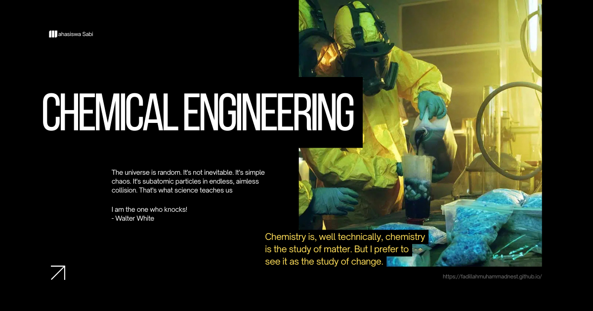

Energi Berkelanjutan
Energi Berkelanjutan merupakan mata kuliah yang mempelajari pemanfaatan dan pengembangan sistem energi yang mampu memenuhi kebutuhan saat ini dengan memperhatikan efisiensi sumber daya, dampak lingkungan, dan keberlanjutan jangka panjang. Dalam Teknik Kimia, bidang ini berkaitan dengan pengembangan proses energi, bahan bakar alternatif, teknologi rendah karbon, serta pemanfaatan sumber energi terbarukan.
Energi Berkelanjutan menggabungkan konsep termodinamika, perpindahan panas dan massa, reaksi kimia, pemisahan, serta desain proses. Mahasiswa belajar bagaimana merancang proses yang menghasilkan atau menggunakan energi secara lebih efisien sekaligus mempertimbangkan aspek lingkungan dan ekonomi.
Bidang ini memiliki penerapan pada industri energi, petrokimia, manufaktur, transportasi, pengolahan limbah, dan teknologi lingkungan. Pengetahuannya juga mendukung riset mengenai bioenergi, hidrogen, penyimpanan energi, bahan bakar rendah karbon, dan pengurangan emisi. Bagi lulusan Teknik Kimia, bidang ini relevan untuk pekerjaan seperti process engineer, energy engineer, sustainability engineer, R&D, dan pengembangan teknologi energi.
Perkembangan teknologi saat ini banyak diarahkan pada hidrogen rendah emisi, elektrifikasi proses, biofuel, penyimpanan energi, serta carbon capture, utilisation and storage (CCUS). IEA mencatat produksi hidrogen rendah emisi terus berkembang, sementara integrasi energi terbarukan dengan industri menjadi bagian penting dalam upaya mengurangi emisi. Pengembangan teknologi juga semakin mengarah pada integrasi energi, optimasi proses, dan pemanfaatan CO2 sebagai bahan baku.
Energi Berkelanjutan memberikan bekal bagi mahasiswa Teknik Kimia untuk memahami bagaimana teknologi energi dapat dikembangkan secara efisien dan lebih rendah emisi. Perpaduan antara rekayasa proses, energi terbarukan, hidrogen, biofuel, dan teknologi karbon menjadikan bidang ini semakin penting dalam pengembangan industri masa depan.